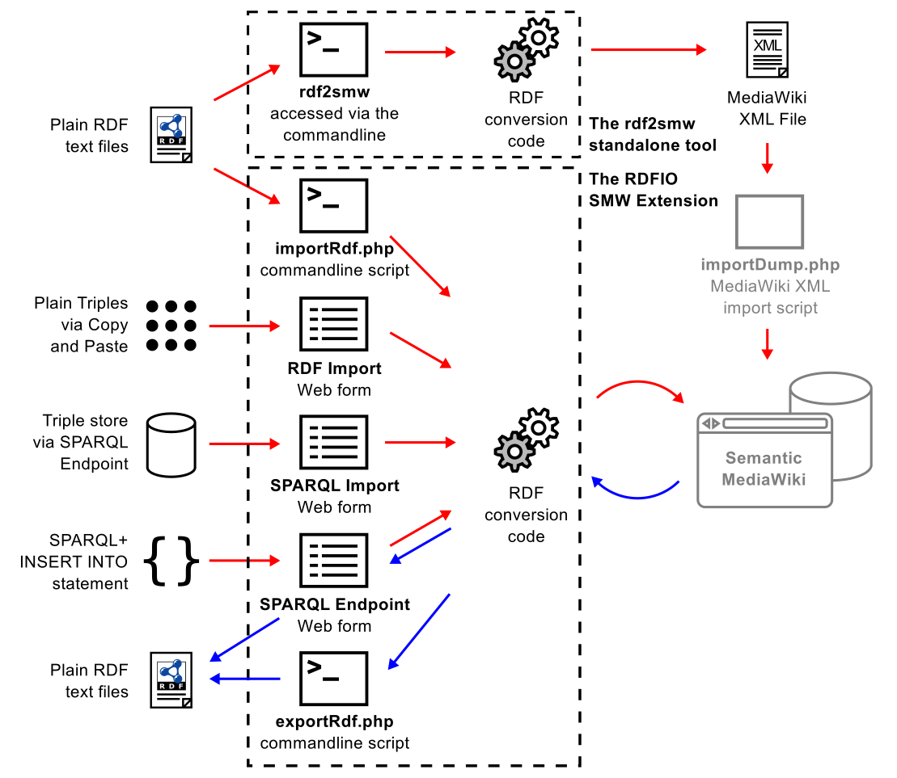
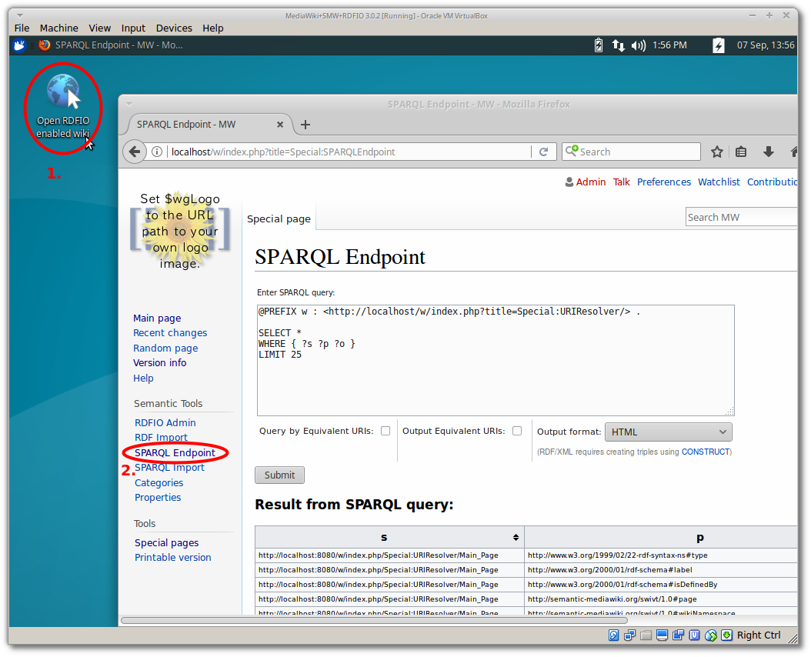
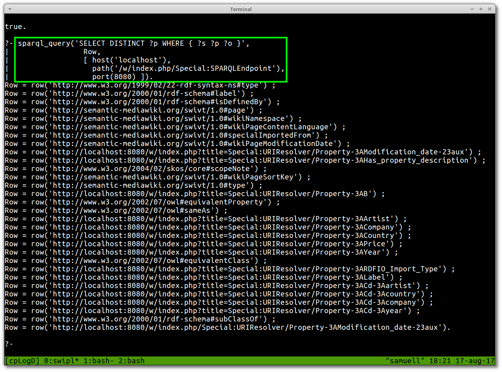

New paper on RDFIO for interoperable biomedical data management in Semantic MediaWiki
As my collaborator and M.Sc. supervisor Egon Willighagen already blogged , we just released a paper titled: “RDFIO: extending Semantic MediaWiki for interoperable biomedical data management ”, with uses cases from Egon and Pekka Kohonen , coding help from Ali King and project supervision from Denny Vrandečić , Roland Grafström and Ola Spjuth .
See the picture below (from the paper) for an overview of all the newly developed functionality (drawn in black), as related to the previously existing functionality (drawn in grey):

The story goes back about seven years, when I had just finished my M.Sc. thesis on using Prolog for Semantic Web in Bioclipse , supervised by Egon. Egon had introduced me to the Google Summer of Code program and stipend, paid to students contributing to open source software projects over a summer. This came at a very suitable time as I was looking for summer work to fill up the summer until I could find a proper job.
The suggestion turned out to come at a suitable time in other aspects too. As Egon and I were playing around with RDF data in Bioclipse, and we also were sporadic users of Semantic MediaWiki (SMW), I at some point wanted to import some RDF data into SMW, but realized there was no general solution for that. I applied a suggestion to work on addressing this to WikiMedia, through the Semantic MediaWiki community. Luckily, it turned out Denny already had similar ideas, and also had some developed ideas about how to implement this already. He had developed the “SMWWriter” extension (no longer available), which could write facts to SMW via the MediaWiki API , and also pointed me to Benjamin (bengee ) Nowack’s widely used ARC2 library which provides various functionality for working with RDF in PHP, including a pure PHP SPARQL endpoint. This previous work and pointers greatly helped me get up to speed with the project fast, despite rather shallow coding experience at the time.
The project was not an overly simple one though, and although I finished a working verison of the RDFIO extension on time, it has been plagued by a lack of time to fix bugs and code maintenance over the years.
With this background, I’m very happy, that, seven years later, with important contributions and code improvements by Ali , and then further massive code clean-up and refactoring, we were able to release the paper about RDFIO, and in the process also improving code quality, test coverage and continuous integration setup. We even created a ready-to-use virtual machine with RDFIO installed , to make it maximally easy to try it out. A screenshot showing how easy it is to start RDFIO in the VM and access one of its components (the SPARQL endpoint in this case) is shown below:

So now what?
So, what are we gonna use this for, after all? One of the latest releases of RDFIO contains a screenshot providing some hints about future prospects: SPARQLing Semantic MediaWikis from SWI-Prolog! Le me provide with the teaser inline:

Expect more posts on this topic in the near future.
Main links
- Check out the paper at 10.1186/s13326-017-0136-y
- The RDFIO project page contains all relevant links to the software. project and paper.